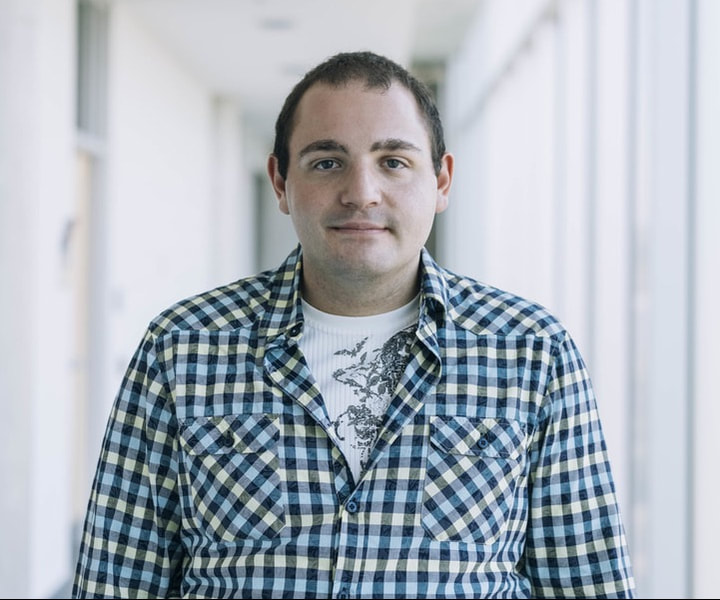

We're happy that there is a wide interest in organization of events for DataEd. These are the members of our team:
Advisory Board Members
- Michelle Hoda Wilkerson, Associate Professor, Graduate School of Education, University of California, Berkeley.
- Zachary Ives, Department Chair and Adani President's Distinguished Professor of Computer and Information Science, University of Pennsylvania.
- Juan Sequeda, Principal Scientist, data.world.
- Julia Stoyanovich, Associate Professor, NYU Tandon School of Engineering.
- Efthimia Aivaloglou, Assistant Professor, TU Delft.
- George Fletcher, Full Professor, Eindhoven University of Technology.
Organizing team
Our currently active organisers are:
Daphne Miedema
 Daphne Miedema (MSc, Eindhoven University of Technology) is a doctoral candidate at TU/e in the Database Group. She obtained a double MSc in Computer Science and Engineering and Human-Technology Interaction in 2019. Her research is located on the intersection of Databases and HTI, applied to education. Daphne's current research interests include query language education, visual query representations and (mis)conceptions.
Daphne Miedema (MSc, Eindhoven University of Technology) is a doctoral candidate at TU/e in the Database Group. She obtained a double MSc in Computer Science and Engineering and Human-Technology Interaction in 2019. Her research is located on the intersection of Databases and HTI, applied to education. Daphne's current research interests include query language education, visual query representations and (mis)conceptions.
Sourav Bhowmick
 Sourav Bhowmick (PhD, Nanyang Technological University) is an Associate Professor in the School of Computer Science and Engineering (SCSE), Nanyang Technological University, Singapore. His core research expertise is in data management, human-data interaction, and data analytics. His research has appeared in premium venues such as ACM SIGMOD, VLDB, and VLDB Journal. He has been Program Co-chair for several venues such as EDBT 2023, CIKM 2020, and DASFAA 2014.
Sourav Bhowmick (PhD, Nanyang Technological University) is an Associate Professor in the School of Computer Science and Engineering (SCSE), Nanyang Technological University, Singapore. His core research expertise is in data management, human-data interaction, and data analytics. His research has appeared in premium venues such as ACM SIGMOD, VLDB, and VLDB Journal. He has been Program Co-chair for several venues such as EDBT 2023, CIKM 2020, and DASFAA 2014.
Michael Liut
Michael Liut (PhD, McMaster University) is an Assistant Professor in the teaching stream at the University of Toronto Mississauga, where he's positioned at the intersection of computer science and education. With a primary research emphasis on applied AI/ML in education, Michael delves into the intricate realms of educational technologies, data systems, algorithmic design, and student behaviour. His passion lies in harnessing these insights to craft adaptive experimentation and innovative behavioural interventions. At the heart of his work, Michael strives to refine and enhance the educational journey.
Past Members
We thank the following past members for their service towards the DataEd initiative: